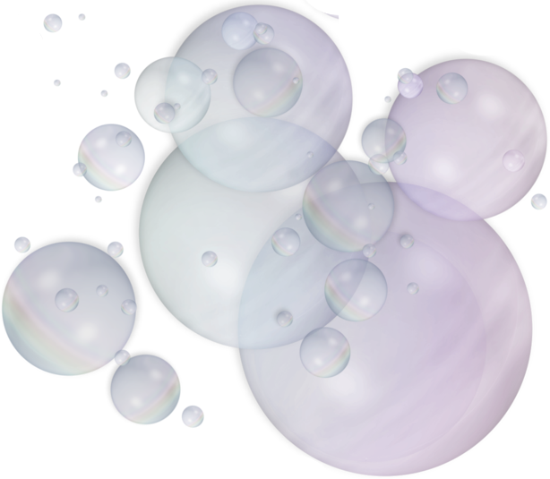

|  | ||||
| Welcome | Images | Why Seltzer | Links | Multimedia |
ABOUT MYSELF
I'm in the Army and I'm trying to achieve my bachelor's in computer programming from Southwestern College Kansas. I love all things computers, but at times I become a little tired of staring at a screen and just want to go outside and see the scenery or socialize with other folks. My hopes is to use the title of having a bachelor's degree as a potential for future promotions in the Army and my Civilian career.
I'm a simpleton (simple person). I enjoy drinking fizzy drinks. In particular, I love to drink carbonated seltzer drinks. I try to maintain my weight, so carbonated water with infused flavors is all that I'm about to keep the cravings of having a sugary drink. I've drinken various brands of seltzer water and I will admit that I was very unimpressed by the named brands compared to lesser known brands. A warning to the future sparkling water drinkers, just because its made by the Coca-Cola factory doesn't mean that it taste all great. In fact, sometimes these big companies try too hard to over-flavor a bubbly drink to the point that it's just not satisfying.
I've created this website here as part of my HTML class. I hope you enjoy it and learn something during your visit.
THE RISE OF FIZZY FANCY WATER
It was the summer of 2011. I was back home after serving a few years in
the US Army. I was visiting family and one of them handed me a brand
name soda water. I tried it and I was hooked. Calorie free, sugar free,
no crazy ingredients? I bought into the carbonated soda water craze and
millions of others did too.
If you read into the many articles
available on the internet you will see that the sparkling water
phase is no fad, but is here to stay.